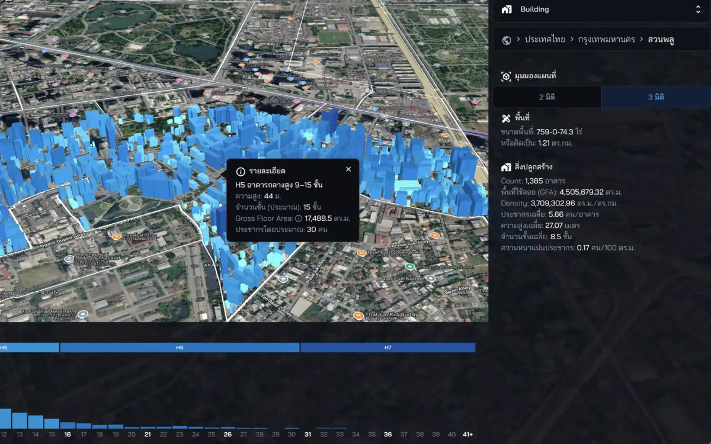

CityMETER · Land
อาคาร: ขอบเขต ความสูง และพื้นที่ใช้สอยโดยประมาณ
เห็นอาคารเป็นภาพเมืองสามมิติ ทั้งความสูง ความหนาแน่น และพื้นที่ใช้สอยโดยประมาณ เพื่อเข้าใจว่าย่านหนึ่งถูกพัฒนาไปในรูปแบบใด
เปิดข้อมูลบนแผนที่ ↗
ตึกมีฐานเท่ากัน เมืองอาจหนาแน่นต่างกัน
ขอบเขตอาคารอย่างเดียวอาจทำให้ตึกเตี้ยกับตึกสูงดูคล้ายกัน เมื่ออ่านความสูงและพื้นที่ใช้สอยร่วมกัน จึงเห็นรูปแบบการพัฒนาที่ควรพิจารณาก่อนเลือกแปลง วางบริการ หรือสำรวจย่าน
ความสูง จำนวนชั้น และพื้นที่ใช้สอยมีค่าประมาณ ใช้ทะเบียนอาคารหรือการสำรวจยืนยันก่อนตัดสินใจรายอาคาร
ลองเริ่มจากสองคำถามนี้
- ย่านนี้มีอาคารสูงหรืออาคารเตี้ยกระจุกตัวตรงไหน?
- พื้นที่ใดควรไปดูสภาพการพัฒนาจริงต่อ?
ดูพื้นที่ที่คุณสนใจต่อ
เลือกย่านที่สนใจ แล้วใช้ความต่างของรูปทรงอาคารตั้งคำถามสำหรับการลงพื้นที่
อ่านต่อจากต้นทาง
แหล่งอ้างอิง ช่วงเวลา และขอบเขตข้อมูล
แหล่งเฉพาะทาง
- ผู้เผยแพร่ข้อมูล
- 3D-GloBFP / OpenStreetMap สำหรับ V4; Google Research สำหรับ V3
- ที่มา
- V4 ใช้ 3D-GloBFP โดย Che et al. และ OpenStreetMap; V3 ใช้ Open Buildings ควรอ่านแหล่งที่มากับรุ่นที่เลือก
- ช่วงเวลาของข้อมูล
- รุ่นที่มีให้เลือก: V3 พฤษภาคม 2566 และ V4 ธันวาคม 2567; ป้ายรุ่นไม่ใช่วันที่สำรวจอาคารทุกหลัง
- พื้นที่ครอบคลุม
- สำรวจข้อมูลอาคารในพื้นที่ที่มีในแต่ละรุ่น; ตัวอย่างนี้เริ่มที่สวนพลู กรุงเทพฯ
- ระดับรายละเอียด
- ขอบเขตอาคารและรูปทรงสามมิติ พร้อมสถิติสรุประดับพื้นที่; ความสูง จำนวนชั้น และพื้นที่ใช้สอยมีค่าประมาณ
เมื่อจะนำข้อมูลไปเปรียบเทียบหรืออ้างอิง
ข้อมูลอาคารและค่าที่อนุมานอาจคลาดเคลื่อนหรือไม่ครบทุกหลัง ใช้ศึกษารูปแบบการพัฒนา และตรวจทะเบียนหรือสำรวจจริงก่อนใช้ตัดสินใจรายอาคาร

สแกนเพื่อเปิดข้อมูลนี้ใน CityMETERเปิดข้อมูลบนแผนที่ (เปิดแท็บใหม่)
แชร์สรุปนี้
ส่งให้คนที่กำลังศึกษาเรื่องนี้ด้วยกัน